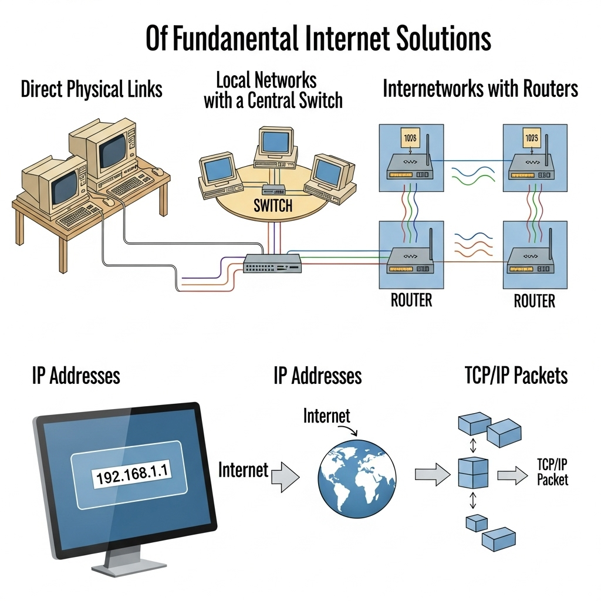

A visual representation of the interconnected nature of the internet.
Basics of Internet:
The Internet is a global network that connects millions of computers and devices,
allowing people to share information, communicate, and access resources from anywhere in the world.
It has revolutionized the way we learn, work, and interact, making information and services easily
accessible to everyone.
How Does Network Work:
Principle 1: The Need to Share Information
The most fundamental truth is that we have information on one computer
(Computer A)and we want it to be on another computer (Computer B).
These computers are not in the same room. How do we solve this? The simplest,
most primitive way is to physically carry the information (e.g., on a USB stick).
This works, but it's slow and doesn't scale. We need a direct, electronic connection.
So, we run a cable (like an ethernet cable or a fiber optic line) between
Computer A and Computer B. We can now send electrical signals or pulses of
light down this cable. We can agree on a simple code: a high-voltage signal means
"1," and a low-voltage signal means "0." We have just created the most
basic form of a network: a direct link. We can now send bits (1s and 0s)
between two computers.
Principle 2: The Problem of Scale:
This works for two computers. But what if we have three computers (A, B, and C)
and they all need to talk to each other? We would need a cable from A to B,
from B to C, and from A to C. For four computers, we'd need six cables.
For 100 computers, we'd need 4,950 cables. This is a failure of scale.
Connecting every machine to every other machine directly is physically impossible.
The logical solution is to have a central device. Every computer connects to this
one central point (let's call it a Switch). When Computer A wants to talk to
Computer C, it sends the message to the switch, and the switch forwards it only
to Computer C. We have just invented a Local Network. A group of computers in close
proximity (like an office or a home) can now communicate efficiently.
Principle 3: The Problem of Connecting Networks
Now, our office has a local network. Another office across town also has its own
local network. How does a computer on our network talk to a computer on their network?
We face the same scaling problem. We can't run a wire from every computer in our
office to every computer in theirs. The logical solution is to connect the networks
themselves. We need a special, dedicated computer that is connected to our network
and also connected to their network. Its only job is to pass messages, or
"route" traffic, from one network to the other. Let's call this device a
Router. Now, if we want to connect to a third network, we just connect our router
to their router. Suddenly, we can build a massive, sprawling web by connecting networks
to other networks. This is the fundamental truth of the Internet. The Internet is a
"network of networks." It is not one giant cloud; it is millions of private and public
local networks all connected by these special routing devices.
Principle 4: The Problem of Finding Anyone (Addressing)
We have built a global web of interconnected networks. If I'm on my computer in my office,
how do I send a message to a specific server in another country? There are millions of
computers. I need a unique address for every single device. This gives rise to the need
for a universal addressing system. Just like the postal service needs a unique street
address for every house in the world, our network of networks needs a unique address
for every connected device.
This is the reason the IP Address (Internet Protocol Address) exists. It's a unique
label (e.g., 142.250.184.142) assigned to each device. When a router sees a
message, it looks at the destination IP address and says, "Based on this address,
I don't need to send it to the network on my left; I need to send it to the network
on my right to get it one step closer to its final destination." Routers don't know
the full path; they just know the next best "hop" to send the message on.
Principle 5: The Problem of Reliability and Fairness
If I want to send a large file, like a 1-hour video, it is a huge stream of data. If I try to
send it all at once:
1. I would completely monopolize the connection, and no one else could send anything until my
video was done.
2. If even a single bit of information gets corrupted during the transfer, the entire file is
ruined, and I have to start over from the beginning.
This is inefficient and unreliable. The logical solution is to break the large file into many
thousands of small, numbered pieces. Let's call them Packets. Each packet is like a tiny
envelope. It contains:
- A small piece of the data (a "payload").
- The destination IP address (where it's going).
- The sender's IP address (so they can reply).
- A number, so the receiving computer knows how to reassemble them in the correct order
("Packet 1 of 5,000," "Packet 2 of 5,000," etc.).
These packets can travel independently across the internet, sometimes even taking different routes.
The receiving computer gathers all the packets, checks if any are missing (and requests them again if they are),
and reassembles them in the correct order to recreate the original file.
This system of rules for addressing, breaking down, sending, and reassembling data is called a Protocol.
The main one used on the internet is TCP/IP (Transmission Control Protocol / Internet Protocol).
Summary of the Principle:
So, the internet isn't magic. It's a series of logical solutions to a series of fundamental problems:
1. Problem: Share data between two computers. Solution: A direct physical link.
2. Problem: Connect many computers efficiently. Solution: A local network with a central switch.
3. Problem: Connect many networks efficiently. Solution: An internetwork connected by routers.
4. Problem: Find a specific computer in this massive web. Solution: A universal IP Address for every device.
5. Problem: Send data reliably and fairly without errors. Solution: A set of rules (TCP/IP) to break data into small, addressed packets that can be reassembled.
Diagram of the topic:

A diagram illustrating the connection flow of the internet.
IP Address:
An IPv4 (Internet Protocol version 4) address is the classic IP address format everyone is used to seeing.
- Structure: It's a 32-bit number. To make it readable for humans, we divide it into four 8-bit sections,
and write each section as a decimal number from 0 to 255.
- Example: 172.217.16.142 (one of Google's addresses)
- The Big Problem (The Why): A 32-bit number means there's a hard limit on the total number of
possible addresses: 2^32, which is about 4.3 billion.
Public IP Address:
A Public IP address is your global, unique address on the internet.
Analogy: The company's main, public phone number.
Uniqueness: It must be globally unique. No two devices on the internet can have the same public IP address at the same time.
Purpose: To be reachable from anywhere in the world. This is the address that web servers, email servers, and any other public service use.
Assignment: It is assigned to you by your Internet Service Provider (ISP) (Comcast, AT&T, etc.). You don't control it; you lease it from them.
Who has one? Your home router has one. The server hosting google.com has one. The server hosting Netflix has one.
When you go to a site like whatismyip.com, it shows you the Public IP address of your router. From the internet's perspective, your entire home network looks like a single device with that one public address.
Private IP Address:
A Private IP address is a local address used only within your own private network(e.g., your home Wi-Fi, your office network).
Analogy: The employee's private, 4-digit extension number.
Uniqueness: It only needs to be unique on your local network. My laptop can have the
address 192.168.1.100 on my home Wi-Fi, and your laptop can have the exact same address
on your home Wi-Fi. They don't conflict because they are in separate, private networks.
Purpose: To allow devices on the same local network to communicate with each other without
needing a globally unique address for each one. Your laptop talks to your printer using private IPs.
Your phone streams to your Chromecast using private IPs.
Assignment: It is assigned to your devices by your own router.
Reserved Ranges: The internet authorities have reserved specific ranges of addresses just for this purpose.
If you see an IP address starting with one of these, you know it's a private address:
10.0.0.0 to 10.255.255.255 (Used by large corporations)
172.16.0.0 to 172.31.255.255 (Used by medium-sized networks)
192.168.0.0 to 192.168.255.255 (Most common for home networks)
IpV6:
IPv6 (Internet Protocol version 6) is the next generation of the Internet Protocol. Its primary purpose
was to solve the address exhaustion problem of IPv4. The fundamental difference is the size of the address:
- IPv4: Uses a 32-bit address, giving us ~4.3 billion unique addresses.
- IPv6: Uses a 128-bit address.
The difference between 32-bit and 128-bit is not 4x. It's an exponential leap that is difficult to comprehend.
The number of possible IPv6 addresses is 2^128, which is roughly:340,000,000,000,000,000,000,000,000,000,000,000,000 (340 undecillion)
What Does an IPv6 Address Look Like?
Because it's so long, the format is different. It uses hexadecimal(numbers 0-9 and letters a-f) instead of just decimal numbers.
An example of a full IPv6 address:
2001:0db8:85a3:0000:0000:8a2e:0370:7334
It's broken down into:
- Eight groups of four hexadecimal characters.
- The groups are separated by colons (:).
Overview of the process:
An overview of how data travels across the internet.
MAC Address:
A MAC (Media Access Control) Address is a unique, permanent serial number burned into every
network-capable piece of hardware (your laptop's Wi-Fi card, your phone, your smart TV, the network
port on your desktop).
A MAC address is a 48-bit number. To make it readable for humans, it's typically written as
12 hexadecimal digits. The most common ways you'll see it displayed are:
Colon-Separated (Most Common):3C:22:FB:A3:B4:C5
Hyphen-Separated (Common on Windows):3C-22-FB-A3-B4-C5
Period-Separated (Used by Cisco and other network gear):3c22.fba3.b4c5
No Separators (Less common, seen in some software):3C22FBA3B4C5
Show your MAC Adress:
Here are some commands to show your Device MAC address:
Windows
ipconfig /all
getmac /v
MACOS
ifconfig
An example of command line output for displaying a MAC address.
Port Number
Port numbers are numerical identifiers (0-65535) in computer networking that identify specific
applications or services on a device. They work with IP addresses to direct network traffic to
the correct service on a machine, with common ports assigned to standard applications like HTTP
(port 80) and HTTPS (port 443).
A port number is a 16-bit unsigned integer. Because it's a 16-bit number, the total number of
possible ports is 2^16, which equals 65,536.
1. Well-Known Ports (Range: 0 - 1023)
These are the VIPs of the port world. They are reserved for the most common, fundamental, and standardized
internet services.
Controlled By: Strictly managed by IANA.
Privileges: On most operating systems (like Linux and macOS), you need administrator (root or sudo)
privileges to run a program that listens on these ports.
- Key Examples for a Developer:
- 21: FTP (File Transfer Protocol)
- 22: SSH (Secure Shell)
- 25: SMTP (Simple Mail Transfer Protocol)
- 53: DNS (Domain Name System)
- 80: HTTP (HyperText Transfer Protocol)
-443: HTTPS (HTTP Secure)
Registered Ports (Range: 1024 - 49151)
These ports are for specific applications or services that are not as universal as the "well-known" ones.
Companies and developers can register a port for their software to avoid conflicts with other applications.
- Key Examples for a MERN Developer:
- 3000: The unofficial but common default for running React and Node.js development servers.
- 3306: MySQL databases.
- 5432: PostgreSQL databases.
- 27017: The default port for MongoDB, the database in the MERN stack.
- 8080: A very common alternative port for web servers during development.
These ports are not meant for public-facing servers. Their job is completely different.
Controlled By: No one. They are for temporary, private use.
Purpose: When a client (e.g., your browser) makes a request, the operating system assigns a temporary
source port from this range for the duration of that single connection.
Key Takeaway: You never configure your server applications to listen on these ports. They are used automatically
by the client side of a connection.
An example of how source and destination ports are used in a connection.
DNS(DOMAIN NAME SYSTEM):
DNS is the global, distributed system that translates the human-friendly domain names into the computer-friendly
IP addresses. Without it, you'd have to memorize hundreds of IP addresses to browse the web.
Step 1: Checking the Local Cache (Do I already know this?)
Before your computer does any work, it checks if it already has the answer. Speed is everything. It checks in this order:
Browser Cache: The browser itself keeps a short-term memory of recently visited websites.
Operating System (OS) Cache: If the browser doesn't have it, your OS (Windows, macOS, Linux) also has a cache.
Router Cache: Some routers also maintain their own DNS cache.
If the IP address is found in any of these caches, the process stops here, and your browser immediately connects
to the IP address. This is why websites you visit often load so quickly.
Step 2: The Recursive Resolver (Asking for Help)
If the answer isn't in any local cache, your computer needs to ask for help. It sends a query to its configured
Recursive DNS Resolver. This is usually a server run by your ISP or a public one like Google's (8.8.8.8).
Step 3: The Hierarchical Search (The Global Phonebook)
The Recursive Resolver doesn't know every IP address in the world. Instead, it knows how to navigate the global
DNS system, which is a giant, hierarchical tree. It starts from the top and works its way down.
The Root Servers: The resolver first asks one of the 13 logical Root Servers where to find the servers that manage the .com domain.
The TLD Servers: The resolver then asks one of the Top-Level Domain (TLD) Servers for .com where to find the servers for google.com.
The Authoritative Name Server: This is the final step. The resolver asks one of Google's own Authoritative Name Servers for the final IP address.
Step 4: The Journey Back
The Authoritative Server sends the IP address back to the Recursive Resolver.
The Recursive Resolver saves (caches) this answer for a period of time.
The Recursive Resolver sends the IP address back to your computer.
Your OS gives the IP to your browser.
Step 5: The Final Connection
Now, your browser has the IP address it needs. It can now open a direct connection to
the IP address on port 443 (for HTTPS) and say, "Please send me the webpage."